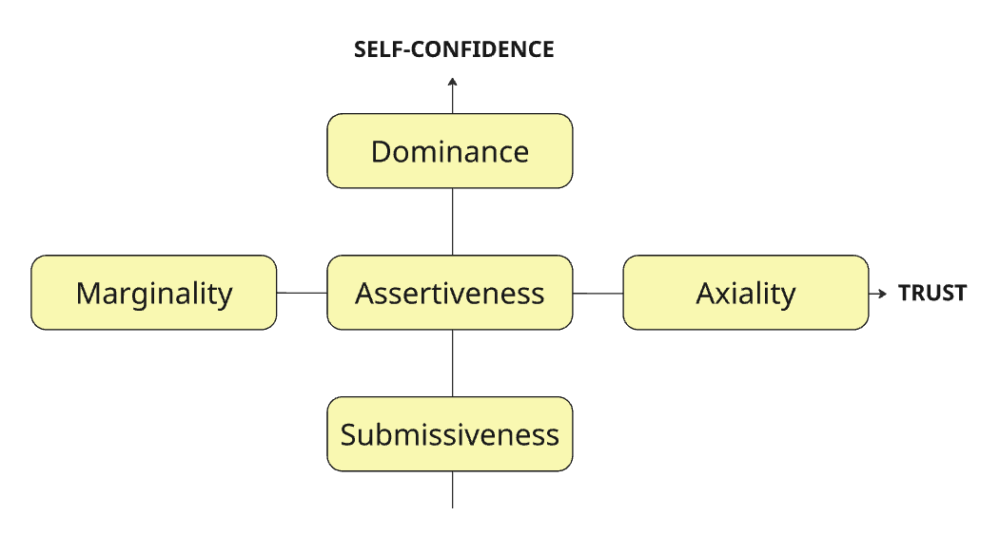
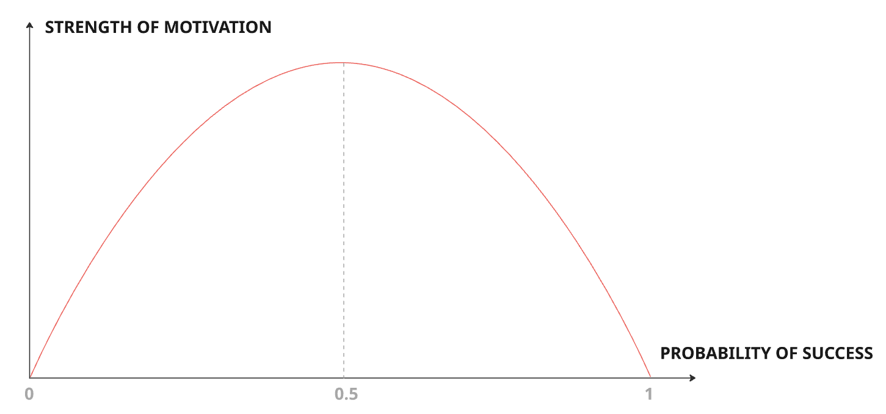

0. Introduction
We contribute in two ways to our children:
- Their genes (nature)
- Their environment (nurture) which determines which of their genes activate.
Some assorted facts and thoughts on neuroscience applied to parenting:
- Being a parent physically changes our brain and limits neurogenesis. The brain of pregnant women shrinks during pregnancy (and expands back to normal size afterwards).
- The brain of a neglected child is physically different from a healthy child.
- Studies show that couples with kids are less happy than couples without kids. But once the kids move out, couples that had kids are happier. It’s worth it in the long run!
- Kids are not mini-adults and we shouldn’t treat them as if they were. Their brains are physically different with more grey matter.
The course largely follows the Neurocognitive and Behavioural Approach (NBA).
There are four “parts” of the brain:
- Reptilian brain
- Paleolimbic brain
- Neolimbic brain
- Prefrontal brain
1. Reptilian Brain
1.1. Its Function
This “primitive brain” is responsible for our survival instincts: the fight/flight/freeze response. Specifically our individual survival.
The name comes from the (erroneous) belief that this part of the brain has its root in a reptilian ancestor. It actually likely goes back even further to a common ancestor of all vertebrates including amphibians and fish, as they all have this brain structure.
The reptilian brain still kicks in in our modern world when there aren’t so many life and death situations. This is stress, and the survival instincts lead to our stress responses:
- Fight - Aggression
- Flight - Anxiety
- Freeze - Helplessness
1.2. The Reptilian Baby
When a baby is born, it is not a blank slate. It’s actually the opposite, a baby has far more neural connections than an adult, and over the first 3 months of its life it deletes connections based on its environment.
Babies can only cry to communicate, so a baby’s cry could be any one of the three stress responses:
- Fight: “I’m hungry, give me food”
- Flight: “I’m wet, get me out of here”
- Freeze: “Where’s daddy gone?”
Our response needs to be appropriate for the stress type. Comforting a baby will work well for a “freeze” response, but if they’re in “fight” mode the best thing to do is address the root cause and feed them, otherwise they will just cry harder.
At this early stage when the baby is driven purely by the survival instincts of the reptilian brain, it is best to give the baby what they want.
Events can be especially traumatic for children because their prefrontal brain, which would help work through emotions and trauma, isn’t developed yet and doesn’t fully mature until 24 years old.
How can you recognise when the reptilian brain is active? They are in one of the three stress responses:
- Fight - Tension in jaws, arms and legs, stamping feet
- Flee - Movement and avoiding confrontation, avoiding eye contact
- Freeze - Tears or apathy
How to deal with each stress response?
In all cases, show them that you are on their side. Ask them if they want a hug and if they say no assure them that a hug is still an option later. Hugs release oxytocin, good for bonding and stress relief.
- Fight - Empathise with their outrage. Acknowledge their feelings if you are the cause of their anger.
- Flee - Give them options, show them you are on their side.
- Freeze - Give support and sympathy.
When the reptilian brain is active, hug them and give them what they want. But don’t do this if the paleolimbic brain is active.
1.3. Movement
Kids aren’t made to sit still!
The reptilian brain may be more accurately referred to as the “primal brain”. It handles many fundamental tasks including breathing, heart rate, sleep and movement.
The point of the brain is to coordinate movement. Organisms which are alive but don’t move don’t have a brain. Organisms which move do have a brain.
The cerebellum is 10% of the brain’s volume but has 50% of the neurons, and is responsible for balance, muscle tone and coordination.
Climbing trees is ridiculously good for your brain. Some studies show it can boost working memory by 50%.
1.4. Food
Hunger and thirst are handled by the primal brain, specifically the hypothalamus.
Our brain is 2% of our body’s mass but 20% of its energy intake.
The brain grows at a rate of 250k nerve cells per minute during pregnancy. In the first 90 days a newborn baby’s brain goes from 33% to 55% of an adult’s brain size.
The amount of Omega-3 in breast milk is the strongest predictor of test performance; more than income or schools.
Alcohol dramatically slows down neurogenesis.
Sugar slows down neurogenesis and gives kids a dopamine hit, messing with their rewards structure. It also leads to memory deficiency and cognitive deficiency, and impaired impulsive control.
1.5. Sleep
Very important.
The brain of adolescents goes through a maturation process from the back of the brain to the front called myelination which strengthens the existing connections.
Lack of sleep impacts academic performance in two ways:
- Inability to focus in school
- Memory consolidation happens during sleep
It can also make us more aggressive; studies have shown a lack of sleep increases the size of our amygdala, the centre for fear and aggression.
Rituals are important for sleep:
- Bath
- Story
- Consistent bedtime
Regularity is as important as number of hours of sleep. You can’t just make up the sleep debt at the weekend.
A possible confounding factor: the same self discipline required for academic success is required for good sleep hygiene.
“Co-sleeping is bad” is a myth. We are the only mammals that don’t co-sleep regularly. The myth that they will grow up to have attachment issues is false. Actually the opposite is true: children who co-sleep grow up to have a secure attachment. The knowledge that they have a safe haven with their parents gives them the confidence to venture out and explore.
2. Paleolimbic Brain
2.1. Its Function
Responsible for survival of the group. Living together maximises chances of survival of the group, but this social life needs to be regulated.
The paleolimbic brain defines the position of the individual within the group.
There are two key dimensions to this:
- Self-confidence
- Trust in others

- Dominance isn’t just being brash; dominant people can be charming and nice, but this is a manipulation tactic and not genuine. Others are evaluated in terms of their usefulness to the dominant person. “Too much” self-confidence becomes a belief that one is entitled to more than others. In the extreme case, this leads to Narcissistic Personality Disorder.
- Submissive people believe all of their successes are due to luck and anything that goes wrong is their fault. This is in contrast to dominant people, who will take credit for all success and blame others for all failures. In its most extreme form, submissiveness leads to melancholic depression.
- Marginal people have no trust in anything or anyone. Conspiracy nuts.
- Axial people have too much trust in others to the point of gullibility. Becomes mystical delirium in its most extreme form.
2.2. The Parental Instinct
70% of our brain growth happens after birth. Babies are helpless and we have evolved to treat their survival like our own.
There is a “switch” in the limbic amygdala, which is responsible for territorial power games, that is activated when we have children. It causes us to be territorial about our kids.
When it is active, there is no use trying to be rational, the person needs to calm down before being able to reason.
2.3. The Paleolimbic Toddler
The paleolimbic brain kicks in around 2-2.5 years old. They enter the socialisation phase; younger than this they play “next to each other” but alone, but at this stage they actually engage with each other.
Whenever they turn into a “gremlin” that’s the paleolimbic brain in action. You can’t placate the paleolimbic brain like you do with the reptilian brain. Instead you need to assert yourself. Explanations are wasted as the paleolimbic brain won’t see reason, only territoriality.
Pick your battles and let your child win sometimes. This is important for their self-esteem.
2.4. Self-Confidence
For the 10 years around 2-12 years old we start identifying our sense of self-worth and trust towards others. After this age, our level of self-confidence is relatively fixed, and can only change slowly.
Discipline is crucial in this stage, but extremes in either direction can be harmful:
- No discipline means they learn that they can do whatever they want and use others as objects and tools to further their desires. This creates manipulative, dominant people.
- Too much discipline limits their exploration and teaches them they can’t do things alone and are not worthy of the trust of others. This creates submissive people.
Define a framework within which your child can explore, but with rules about what happens when they stray out of bounds. “Don’t point a gun if you’re not ready to shoot”. If you threaten a punishment but don’t actually follow through with it, the child’s brain sees the absence of a punishment as a reward and so this reinforces bad behaviour.
The child will fluctuate over these years. Just because they act dominant one day doesn’t mean you’ve raised a bully; they’re exploring their bounds and fluctuating their levels of self-confidence.
2.5. Beat the Bully
Bullying is dominant paleolimbic behaviour. It relies on intimidation, so if the intimidation stops the cycle breaks.
Teach the victim to stand up tall and say “No. No. No.” when their boundaries are being breached by the bully.
2.6. Submissive vs Introvert vs Shy
These are very different behaviours but often interpreted as similar.
| Behaviour | Brain region responsible | Root cause | How to handle it? |
|---|---|---|---|
| Submissiveness | Paleolimbic | This is about obedience. | We should try to avoid submissiveness and let them connect. |
| Introversion | Neolimbic | This is a character trait. | Focus on what your child is good at. |
| Shyness | Reptilian | This is a fear response. | Show them how to make friends. Invite potential friends over and make the introduction for them. Then ask the other child questions about themselves in front of your kid and let them observe. Read stories about overcoming shyness. Don’t tease or criticise the shyness. |
2.7. Teach Kids to Trust Us
The Marshmallow Test: The ability to delay gratification is one of the strongest predictors of success.
Delaying gratification is about more than just pure willpower. It is about how our world view was shaped in our early years.
If the world is seen as hostile, we will take short-term gains as we don’t trust in future rewards. If we see the world as stable and trustworthy, we are more willing to defer rewards for better future rewards.
To encourage this:
- When you promise something, make sure you deliver
- If they want something, make them earn it (by cleaning their room, etc)
- When you warn them of something, follow through. There needs to be consequences.
Teach them that action leads to reaction, both positive and negative.
3. Neolimbic Brain
3.1. Its Function
Responsible for our memory and motivations. Usually runs the show when we are on autopilot, handling situations we’ve experienced before. It uses the minimum amount of energy for routine tasks to allow us to multitask.
Three layers of motivation:
- Intrinsic motivations. Fixed by the time we are 3 months old. Things we enjoy that give us energy. This leads to us having 2-4 of the “personality types” detailed below.
- Extrinsic motivations. Our likes and dislikes. These change over time. They cost us energy and will fade if we don’t see success. Extrinsic motivations push us to do what others expect of us. The motivation boost from a substantial salary raise only lasts 3-6 months.
- Obsessions. A passion that has gone beyond a tipping point. We will never be satisfied, this is the root of addiction. Not just the usual suspects of drugs, alcohol, etc but also workaholism, retail therapy.
3.2. Expectations
3.2.1. The Pygmalion Effect
How we think about others will influence how they will perform. A self-fulfilling prophecy. People will conform to the expectations of them.
There have been many studies that illustrate this effect. One example is where teachers were given a list of the “high potential” students at the start of the school year, but explicitly told not to show any preferences. The students were assessed at the end of the year and those high potential students would score the highest. But that initial list of high potential students was random. The teacher’s higher expectations resulted in higher outcomes.
The flip side of the Pygmalion Effect is the Gollem Effect. Negative expectations lead to negative outcomes.
Even when we try to hide our preferences from a child, they are very good at picking up on them.
3.2.2. How Demanding Should We Be?
- Too high expectations causes them to be insecure, relying on external recognition/validation and have attachment issues.
- Too low expectations causes them to conform to these low expectations and underachieve.
Focus on effort not results. Be demanding on effort and forgiving on results. Encourage them to work hard, not achieve a lot. One will naturally lead to the other.
Otherwise, the risk is they will learn that if they don’t get results then they are not worthy of our love.
3.2.3. How High Should We Put the Bar?
Discuss this with the child and set up the rules together. Challenge them to exceed their own expectations.

Part of our job as the parent is to gauge their ability and set goals accordingly so that they have a probability of success in the sweet spot. Not so low that there is no change of succeeding, and not so high that the task is trivial.
3.3. Punishments
Operant conditioning: Through our punishments and rewards we shape the personality of our kids.
This is a lifelong thing, it doesn’t stop in childhood.
Never make a threat you won’t act upon. This damages your authority. If you say “I’m counting to three” then you have to actually do something when you reach three.
Types of punishment: timeouts, grounding, confiscate a toy.
Physical punishment is always detrimental. It reinforces the world view that “I am bigger and stronger than you, therefore I can force you to do what I want”. Not a great lesson to teach them. Can they hit smaller kids at school? Or grow up and hit smaller adults (especially women)? Or is the lesson that only adults can hit kids?
How to punish:
- Consequences have to be clear and accepted.
- You can even let them decide - “You know you’re not supposed to hit and that was naughty. What do you think the consequence of that should be?”
- You can always disagree with their proposed punishment, but it at least makes them think rationally about their behaviour which disengages the reptilian brain that might have caused their behaviour in the first place.
- Transgressions should always have consequences.
- You can’t let them off the hook. From the brain’s perspective, a lack of punishment where it was anticipated is perceived the same as a reward; you get a dopamine hit. This encourages the behaviour.
- Forcing consequences helps them establish a stable world view and value system.
- No drama.
- You don’t need to shout or get angry. Just calmly and directly enforce the consequences.
3.4. Parenting Styles
3.4.1. When to Intervene
Childhood is a lab where kids are able to experiment without having to experience the full consequences that they would as an adult. This experimentation is crucial for their development. They need to experience things for themselves, both positive and negative.
When parents intervene too much, they deny children the opportunity to experiment. By trying to make things easier in the short-term, we make things harder in the long-term. The subconscious message you’re sending is that they are not capable of doing things themselves, they need permission from someone else before they can do the things that interest them. This is what psychologists call “learned helplessness”.
We should help, just not right away.
3.4.2. Attachment Theory
What kids need most is safety and exploration. The more secure a person feels at home, the more likely they are to venture out and try new things.
Attachment even at age 1 is a strong predictor of future attainment and relationships later in life.
There is no single “correct” parenting style. Lenient vs authoritarian doesn’t seem to affect the attachment level.
It’s ok to screw up from time to time. Children aren’t so fragile that one misstep will ruin them. The overall pattern of care needs to be reliable and predictable. We are also not the only relationship in their life. They can learn lessons from extended family, teachers, friends etc.
Types of attachment:
- Securely attached.
- Parents are attuned to the child’s desires and mirror their moods
- Parents calm the child when they are anxious or sad, play with them when they are happy.
- Avoidantly attached.
- Parents are emotionally withdrawn and psychologically unavailable.
- Lack of communication and affection.
- The child learns that they have to take care of themselves.
- The child will become independent but struggle to make relationships. They suffer from anxiety and are unsure in social situations, they withdraw before others get too close.
- Ambivalent / disorganised attached.
- Parents are inconsistent; they are sometimes present and loving, then disappear for a while.
- Children grow up to be more fearful and struggle to control impulses.
3.5. Your Child Has Personality
“Let them become who they are”.
The genes you pass on are not the sole determinant of how your child ends up.
During the first 3 months of the child’s life, their reptilian brain is in control, and their experiences in these 3 months influence their intrinsic motivations and personality.
The baby only know 4 experiences:
- Flee. This leads to a love of movement and change.
- Fight. This leads to a love of challenges and winning.
- Freeze. This leads to a love of sharing and caring.
- Standby mode. No perceived danger. This leads to a love of contemplation and thinking.
The things that trigger these responses are things like noises in the environment, how long they cry before being soothed, etc.
Which category does your child fall under? This determines what their intrinsic motivations are, and we should encourage choices that support these primary motivations.
It can be easy to project our own motivations on to others and encourage kids to do the things we like. These become the child’s extrinsic motivations. Some people can eventually become successful in things they don’t really like, but they won’t achieve joy, fulfilment or happiness.
Being overbearing and cheering them on too much can turn an intrinsic motivation into an extrinsic motivation. They initially love something, but then just carry on doing it because they get praised for it.
“Parents will do anything for their kids except let them be themselves” - Banksy
Let the child experience life as much as possible. Don’t restrict too much, don’t push too much, just let them be.
3.6. Mindsets
The idea of fixed mindset vs growth mindset comes from Carol Dweck.
- Fixed mindset focuses on results.
- Growth mindset focuses on effort, experimentation. Enjoying the process.
The outcome might still be the same, but the difference is how you feel about the outcome. If you fail an exam after studying hard, with a fixed mindset you’ll be miserable and beat yourself up. With a growth mindset, you’ll see the positives and try again.
A growth mindset is crucial to put in the sustained effort required for real success.
3.7. Compliments
Whatever you praise your child for reinforces that behaviour. If you praise your child for working hard, they’ll learn to persevere. If you praise them for being smart, they’ll believe success is something you’re born with and quit when things feel difficult, taking fewer risks to avoid looking stupid.
Praise effort not inborn traits.
Don’t overdo it. The brain gets used to it and needs more and more of it to get the same dopamine hit. They may also start to love the praise more than the activity, making them turn away from activities that interest them unless they’re being praised.
4. Prefrontal Brain
4.1. Its Function
This is the part of the brain mostly unique to humans; other mammals have one but ours is huge in comparison.
It is responsible for creativity, dealing with unknown and complex situations.
At least it should be, but often we get spooked and one of the other parts of the brain takes over, leading to poor decisions and resistance to change. When we use our limbic brain, we cannot see beyond what we have already experienced.
Feeling calm and in control is a sign our prefrontal brain is active.
4.2. Techniques to Stay Calm
These techniques force the prefrontal brain to activate. This helps when your primal brain is taking charge and you subconsciously see your children as a “threat”.
- Imagine yourself 10 years from now looking back on this moment. You probably won’t even remember it. If you do, you’ll probably look back fondly. This helps put things into perspective.
- Look at the situation and imagine how it could be worse.
4.3. Learning
Parents and community have a greater effect on achievement than school.
The best approach to learning is to force them to get things wrong.
Retrieving information strengthens the neural pathways in their brain. Let them fail with you.
Repeating something ~6 times helps it stick. Better to do this as phased repetition spread over many days rather than cramming in a single night.
Sleep is crucial to consolidate memories and neural pathways.
4.4. Adolescence
4.4.1. The Adolescent Brain
It would be easy to explain away the changes in behaviour during adolescence as “their brains aren’t fully mature”. But this isn’t the whole story.
Our brains are 90% of their full size by age 6. From 12 onwards, the brain goes through a “rewiring” process from rear to front called myelination.
Kids are not mini-adults, but teens are not children. They need to be treated differently during adolescent years than when they were a child.
Ask yourself: are your children there to attend to your emotional needs, or are you there to attend to theirs? The answer should be clear.
Adolescence is not cultural, it’s in our genes. The purpose is to produce a person primed to leave a safe home and move into unfamiliar territory.
The adolescent brain becomes very sensitive to:
- Dopamine.
- Reward hormone.
- It explains why teenagers learn fast, but also why success and defeat are met with extreme emotions.
- It is why they take risks; this is different from impulsivity which drops from age 6. An example of the distinction is planning a bungee jump - risky but not impulsive.
- Oxytocin.
- Responsible for bonding.
- It explains why friendship is so important during adolescence.
The result of the two hormones is someone socially active, sensitive to peer pressure, looking to meet new people and try new things.
Teenagers understand risk as well as adults. The reason for higher risk taking isn’t a lack of understanding the consequences, it’s that they weigh the risk vs reward differently. The dopamine makes the reward hit harder. Their utility function is steeper.
4.4.2. How to Parent a Teen
They still need a framework of rules and structure, but one that gradually expands as they mature.
The paleolimbic brain is often active, leading to territorial clashes. A light but steady hand when parenting, staying connected but allowing independence. Clearly define the rules and consequences for breaking the rules. Negotiate the rules, don’t impose them. Revisit the rules periodically, every 6 months.
Make sure they sleep enough because sleep health is so important to brain development and overall health.
4.5. Screen Time
Children, and everybody in general, spend a lot of time looking at screens. Screens are designed for dopamine hits.
One of the arguments in favour of screen time is essentially peer pressure - they’re going to need to know how to use technology so they better start now.
The effects of screens on the brain:
- Grey matter atrophy
- Loss of white matter integrity
- Reduced cortical thickness
- Impaired cognitive function
There are also links with attention issues and depression.
There is also the opportunity cost of what they could otherwise be doing: playing, socialising, learning. These alternative activities would develop motor skills and social skills.
There is also the issue of sleep deprivation, both from the constant dopamine hits making it harder to fall asleep, and the blue lights in screens.
Recommendations:
- Limit screen time to <2 hours a day. None at all for children under 2 years old, some say 3 years old.
- It’s easier to “quit” when you haven’t started in the first place. Prevention is the best cure. Don’t allow many screens in the first place then excessive screen time won’t be as much of an issue.
4.6. Grit
The capacity to continue when things get tough.
This is a bigger predictor for “success” than IQ or education. The average IQ for Nobel peace prize winners is “only” 121.
Delayed gratification, growth mindset, learned helplessness are all related to grit. When you encounter an obstacle, do you give up or try harder?
Kids need to fail to learn how to respond to failure. Love the process.
Adversity in childhood can help develop grit, but it can also lead to learned helplessness. The difference is the perception of control. Where they feel they can influence the outcome, they are more likely to continue trying. Where they feel like it was beyond their control, they are likely to give up.
We need to be demanding and supportive. The demands should grow with their ability (and hence age). Recall the Pygmalion Effect. Remind them to try harder, try differently.
Our brains evolved for instant gratification and energy efficiency. This manifests as short-term thinking and laziness. So we are fighting an uphill battle against their ingrained nature to encourage children to try doing hard things.
If they do a bad job but tried hard, praise the effort and encourage them to think how they could do better next time. If they do a bad job and didn’t try, be straight with them. Your job as parent is to be demanding yet supportive; don’t skimp on the demanding part of the situation calls for it. “Tough love”.
5. Conclusion
5.1. The Perfect Parent Myth
You can’t (and shouldn’t try to!) protect your kids from everything. Learning how to deal with failure and pain is one of the most important lessons you can teach them.
Don’t hold yourself to impossibly high standards. One of the groups most at risk of burnout is stay-at-home parents of small kids.
5.2. It Takes a Village
You are an important person in your child’s life, but you are not the only person. They will be influenced by parents, extended family, friends, teachers, sports coaches, music teachers, etc.
It can help to shift the narrative from “I am raising my child” to “I am assembling the team of people who will influence them”. You are a coach, not a player trying to play every position.
The child may express parts of their personality in different ways with different people.
5.3. The Birth Order Effect
You raise all your children the same and they turn out differently. WTF?
The simple fact of having siblings, older and younger, affects our personality. This is called the “birth order effect”.
- First child.
- Will automatically get more attention from parents, because there are no other children to divert attention, and the desire to be a “perfect parent” the first time around (before you realise this is a myth).
- The child will commonly be: reliable, conscientious, controlling, achievers, perfectionists, competitive mindset.
- Middle child.
- Parents’ attitudes become more relaxed.
- The middle child gets less attention than any other; first-born gets it at the start, then younger children afterwards.
- The child will commonly be: people pleasers, rebellious, thrive on friendship, large social circle, peacemakers.
- A caveat to “middle child syndrome” is when the first and middle children are different sexes. Then they might be given attention in different ways.
- Youngest child.
- The parents have loosened the reigns completely. The child tends to be: fun loving, uncomplicated, manipulative, outgoing, attention seeking, self-centred.
With an only child, there are similar characteristics to the first child but more extreme. They also tend to be mature for their age.
These aren’t hard and fast rules, and things like twins, adoption or large gaps between children can change the dynamics considerably.
So even if you feel like you are raising your children the same way, it’s impossible to do so.
5.4. The Golden Rules
The important ingredients for brain development are:
- Sleep
- Movement
- Diet
Golden rules:
- Give your child a framework - a set of rules
- Within this framework, let them experiment
- Avoid small social traumas
The best way to deal with the primal brain is to take away the perceived danger. Communicate on the level of emotions, not always rationality.
Remember the techniques to deal with stress: imagine looking back on this moment in 10 years time, and also imagine how it could have been worse.
References
- “Neuroscience for Parents” Udemy course
2.8. Social Pain
Oxytocin is the hormone responsible for bonding, but it also leads to the “us vs them” mentality. It reinforces in-groups and out-groups.
From an evolutionary point of view, it was much safer to be part of the tribe, and rejection could even mean death. This is why rejection still hurts so much in modern society, it is deeply ingrained. Brain scans show that rejection can have a similar brain response as physical pain. There is an overlap in the neural pathways.
Adolescents need to discover their own clan, this is a crucial part of their development. But a side effect of this is that we as parents are now in the “out-group” as they form a new in-group with friends.